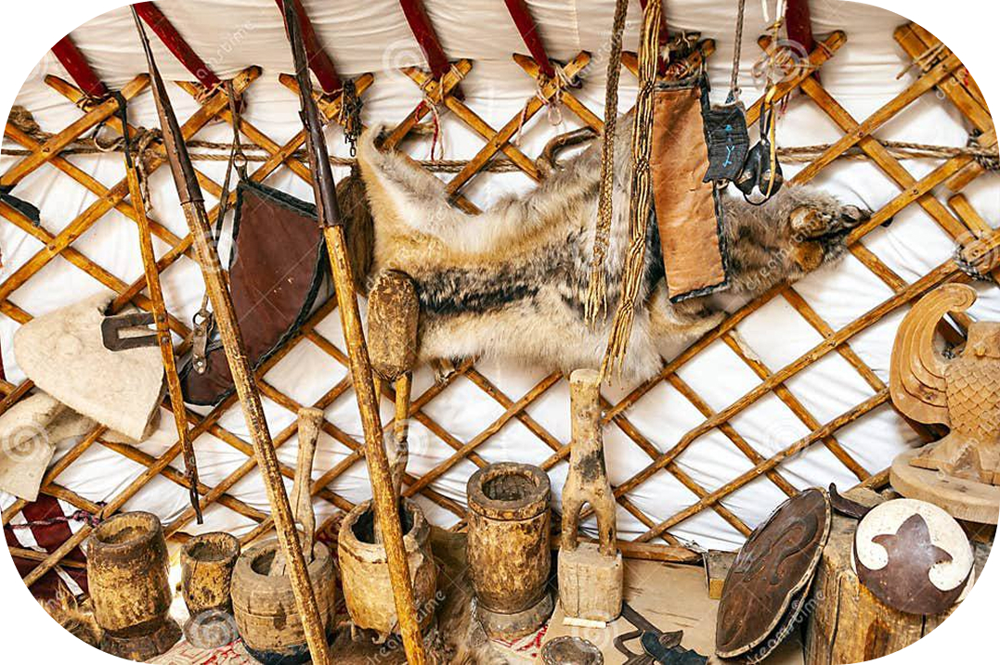

Юрта
Юрты - одна из важнейших частей кыргызской культуры, и это больше, чем просто дома. Они символизируют семью, землю и вселенную и покрывают все этапы жизни от рождения до смерти. С юртами связана большая часть кыргызской культуры, от важных ритуалов и церемоний, до ремесленничества и традиционного мастерства.
Первые упоминания о жилищах, схожих с юртами, встречаются в древних китайских хрониках, где описываются переносные войлочные дома, используемые кочевыми народами степей. Веками юрта была центром семьи, защиты от сурового климата и отражением народных ремесел. Юрта представляет собой разборное каркасное жилище, выполненное из дерева и войлока, идеально приспособленное для жизни в условиях кочевого образа жизни. Уникальность кыргызской юрты заключается в её продуманной конструкции. Традиционная кыргызская юрта строилась без единого гвоздя, использовались лишь материалы, которые были у кочевников под рукой. Основной каркас юрты выполнен из дерева, обычно из сосны или ивы, которые доступны в центральноазиатских регионах
Каркас состоит из следующих элементов:
Кереге — это решётчатая основа стен. Она делается из деревянных прутьев, которые связываются между собой и создают прочный, но гибкий каркас
Уук — деревянные балки, которые поддерживают крышу юрты. Они крепятся к верхнему кольцу и к стенам, создавая куполообразную форму.
Тудук — центральное кольцо, которое располагается вверху и поддерживает крышу. Оно символизирует солнце и считается священным

Тундук – решетчатое отверстие в потолке.
Тундук, напоминающий колесо, покрытое сверху кошмой (войлоком), является сердцем юрты. Через него в жилище проникает свет и свежий воздух, а дым от очага уходит наружу. Тюндюк – это символ неба, Вселенной и семейного очага. Его изображение украшает флаг Кыргызстана, подчеркивая его важность для народа.
Кереге – складывающиеся решетчатые стены.
Кереге собирают из гибких реек, которые закрепляются ремнями из телячьей или верблюжьей кожи. Благодаря своей эластичности и прочности кереге придаёт юрте устойчивость и лёгкость.
Ууки – брусья, соединяющие кереге и тундук.
Ууки образуют купол юрты, создавая её характерную форму. Интересно, что именно изогнутая форма ууки отличает кыргызскую юрту от аналогичных построек в Монголии, Алтае и Тибете.
Эшик – дверь юрты.
Дверь в юрте делается из дерева и покрывается войлоком для защиты от холода. Вход всегда ориентирован на восток, чтобы первые лучи солнца освещали жилище, символизируя новый день и обновление жизни.
Для крепления отдельных элементов также использовались плетеные кожаные ремешки, которые опоясывали юрту по периметру и служили ее украшением.
Идеальным материалом, который был выбран кочевниками для покрытия стен и крыши юрты, была кошма. Кошму или войлочный ковер катают из верблюжьей или овечьей шерсти. Она не пропускает холод и жару, не боится влаги, в ней не заводятся паразиты. Кошмой также полностью застилали полы.
Символика юрты в кыргызской культуре
Каждая деталь юрты несёт в себе глубокий смысл:
Тундук символизирует небо и Вселенную. Это напоминание о том, что человек – часть природы.
Кереге и ууки олицетворяют единство и гармонию между членами семьи и природой.
Круглая форма юрты отражает философию бесконечности и равенства – в доме все равны, и у каждого есть своё место.
Кроме того, юрта – это не просто жилище. Она играла центральную роль в жизни кочевников: в ней проводились праздники, ритуалы и обряды, такие как свадьбы, родины и семейные встречи.
Внутреннее убранство Юрты
Внутреннее убранство в юрте устанавливалось веками, и до настоящего времени в размещении тех или иных предметов и в назначении отдельных частей помещения наблюдается большая устойчивость. До сих пор, например, различаются женская и мужская половины, почетное место и место для костра.
Освещали юрты раньше при помощи чугунного или глиняного светильника чырак, имеющего древнейшее происхождение.Фитиль делали из ваты, жир использовали всякий. Для светильника недалеко от очага в землю втыкали деревянную подставку «чирак пая». Керосиновые лампы стали появляться лишь в начале XX в.
Место у противоположной от входа стены считается почетным. Его называют тор. Здесь принимают гостей, раскладывая перед ними скатерть «дасторкон».
Юрта сегодня: Между традицией и современностью
Сегодня кыргызская юрта остаётся важной частью культуры Кыргызстана. Её можно увидеть на национальных праздниках, фестивалях и этно-мероприятиях. Мастера продолжают изготавливать юрты вручную, сохраняя древние технологии и передавая их из поколения в поколение
В 2014 году кыргызская юрта была внесена в Репрезентативный список нематериального культурного наследия человечества ЮНЕСКО, что подтвердило её уникальность и значимость для мировой культуры. Современные архитекторы вдохновляются юртой как примером экологичного и функционального жилья. Её элементы, такие как круглая форма и естественное освещение, используются при создании современных эко-домов.
Юрта — это не просто дом. Это символ культуры, традиций и философии кыргызского народа. Она напоминает о гармонии с природой, уважении к корням и единстве семьи. В каждой детали юрты скрыта мудрость предков, которая продолжает вдохновлять современный мир.